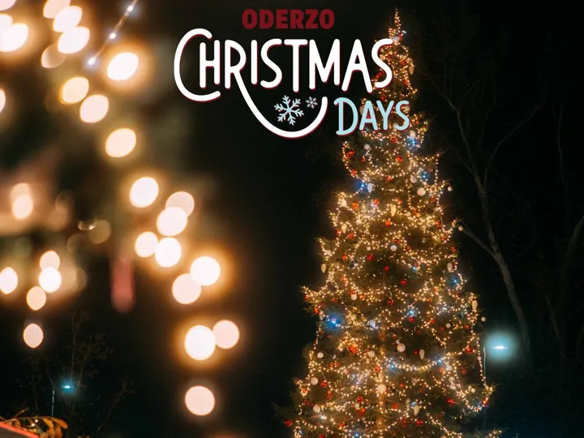

da sab 28 nov a mer 6 gen
Oderzo Christmas Days 2026
Dal 28 novembre al 6 gennaio , Oderzo si veste di magia e si prepara a vivere il periodo più suggestivo dell’anno con gli Oderzo Christmas Days , un ricco calendario di iniziative che anima il centro storico e i suoi luoghi più caratteristici.
 Indicazioni
Indicazioni
- Costi e prenotazioni
- Costo non indicato · Prenotazione non indicata
- Programma
- Programma da verificare. Apri la fonte ufficiale per orari e possibili aggiornamenti.
- In caso di maltempo
- Nessuna indicazione specifica pubblicata.
- Note
- Acquisito automaticamente dalla fonte.
L’EVENTO
Descrizione completa
Dal 28 novembre al 6 gennaio , Oderzo si veste di magia e si prepara a vivere il periodo più suggestivo dell’anno con gli Oderzo Christmas Days , un ricco calendario di iniziative che anima il centro storico e i suoi luoghi più caratteristici.
Le festività si aprono con l’accensione del grande albero di Natale , delle luminarie e della Via dei Presepi, accompagnate dai canti dei cori natalizi. Piazza Castello ospita l’Opitergium Christmas Village , con casette enogastronomiche, musica, eventi e bevande calde, mentre in Piazza Grande i più piccoli possono incontrare Babbo Natale e partecipare a laboratori , letture e attività dedicate.
Non mancano appuntamenti musicali, concerti, spettacoli per famiglie , mercati straordinari e iniziative che coinvolgono le associazioni del territorio. Tra gli eventi più attesi, la Marcia dei Babbi Natale e la Christmas Parade , per vivere insieme l’atmosfera delle feste.
Come da tradizione, l’anno si concluderà con il Concerto aperitivo di fine anno presso il Teatro Cristallo. Le festività si saluteranno invece con il tradizionale Pan e Vin , allestito nell’alveo del fiume Monticano.
Il programma si completa con il parco divertimenti natalizio in Piazzale Europa, la Via dei Presepi e gli appuntamenti culturali promossi da Fondazione Oderzo Cultura.
Il Natale opitergino ti aspetta: vivi emozioni, luci e tradizioni!
IL PROGRAMMA
Programma e orari
Appuntamenti raccolti dalle fonti elencate. Dove manca un orario, non è ancora disponibile in questa scheda.
Programma pubblicato
- 2026-11-28 — 2027-01-06 ·
INFORMAZIONI UTILI
Prima di partire
- Controllare la fonte prima di partire.
ORGANIZZAZIONE